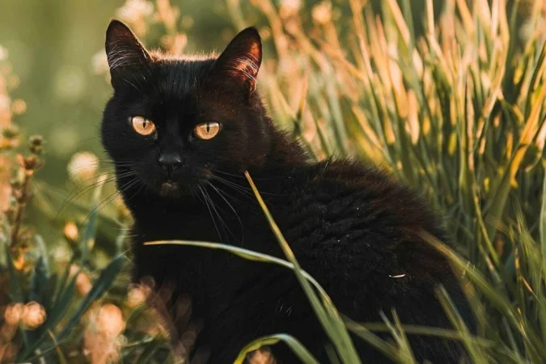

"Caminhando silenciosamente entre o mistério e a arte."
Inspirado pela elegância dos gatos. No meu mundo, o silêncio e o mistério são guias para a criatividade.
Explorando histórias enigmáticas e contos góticos. Cada página é um segredo a ser revelado.
✦ ✦ ✦